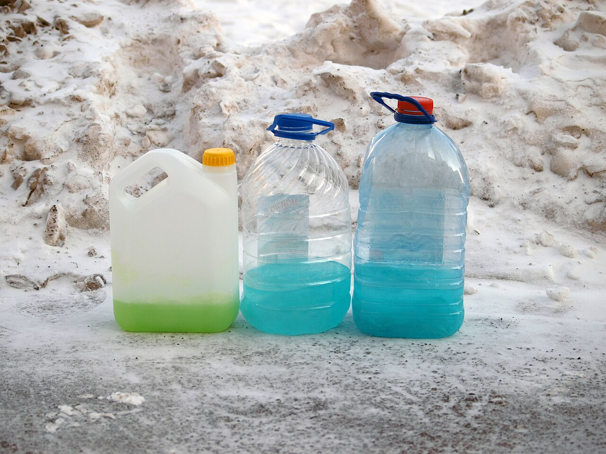

The Wrong Washer Fluid Will Freeze on Your Windshield
Summer washer fluid doesn't just stop working in winter — it freezes on your windshield when you need to see most.

Photo: Staselnik, CC BY-SA 3.0, via Wikimedia Commons

You're driving through a slushy highway in January, a truck sprays your windshield brown, you hit the washer — and the fluid smears into an instant sheet of ice. Now you can't see at all. That's what happens when summer washer fluid meets a freezing windshield. It's one of the most dangerous cheap mistakes in winter driving, and it's completely avoidable.
Why it's wrong
Summer washer fluid is mostly water with a little detergent. It freezes at or near 0°C. Spray it on a cold windshield and it turns to ice on contact — right in your line of sight, at highway speed. Plain water in the reservoir is worse: it freezes in the tank, in the lines, and in the pump, and expanding ice can crack the reservoir or burn out the washer pump. Some people try adding antifreeze (engine coolant) to the washer reservoir as a fix — don't. Coolant is toxic, it smears, and it can damage paint and rubber seals. The washer system needs washer fluid, the winter kind, nothing else.
The right way
- Switch to winter washer fluid in October. Winter formula is rated well below freezing and won't ice up on the glass. Buy the jug rated for the coldest temperatures in your area.
- Flush the summer fluid out first. Don't just top up — run the washers until the reservoir is nearly empty, then fill with winter fluid. Mixed fluid freezes at a temperature between the two, which defeats the point.
- Keep a spare jug in the trunk. Winter driving uses far more washer fluid than summer — salt spray, slush, and road grime. Running out mid-trip is common, and a spare jug costs a few dollars.
- Top up every time you fuel up. Make it a habit: gas, then washer fluid. It takes thirty seconds.
- Check the spray pattern. If the nozzles are clogged with wax or ice, clear them with a pin. Aiming matters too — the spray should hit the middle of the windshield, not the roof.
- Never use plain water, and never add coolant. Winter washer fluid only. It's the cheapest safety item on the whole car.
The rundown
Summer fluid freezes on the glass, water freezes in the lines, and coolant doesn't belong anywhere near the washer system. Flush the reservoir in October, fill it with winter formula, and keep a spare jug in the trunk. Clear glass in January starts with the right jug in October.
← Back to the full winter checklist